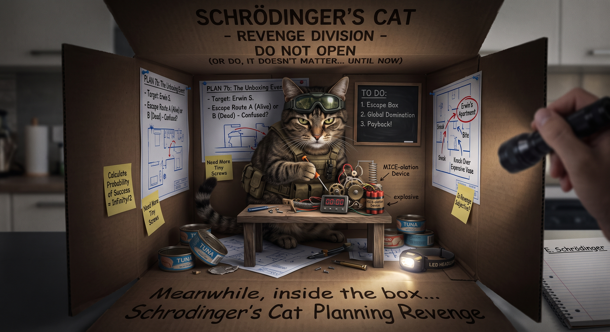

De la efectul de fluture la pisica lui Schrödinger:
fizică computațională pe intelesul tuturor
Proiect realizat de: Simina-Maria Fulaș, Alexandra Evelina Coman, Alina-Ioana Mnerie, Teodora Mihăilă

- Simularile din acest proiect au fost realizate cu WLJS Notebook
- Sursele de informatie folosite au fost Wikipedia, Gemini, ChatGpt, documentatia WLJS